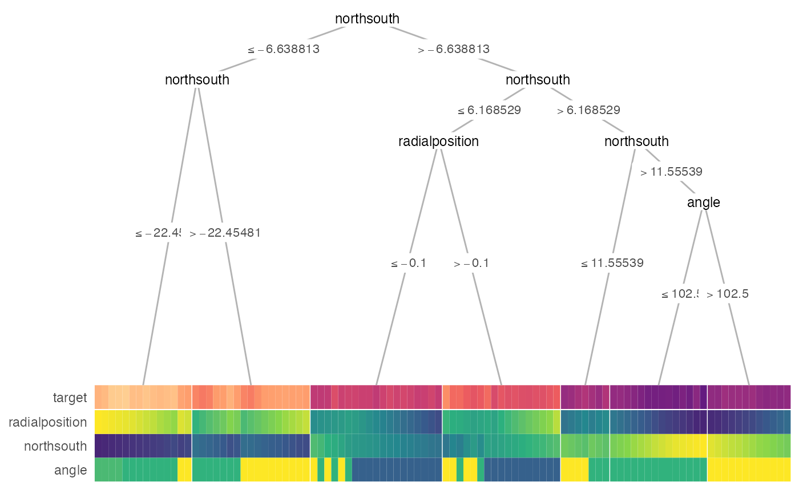
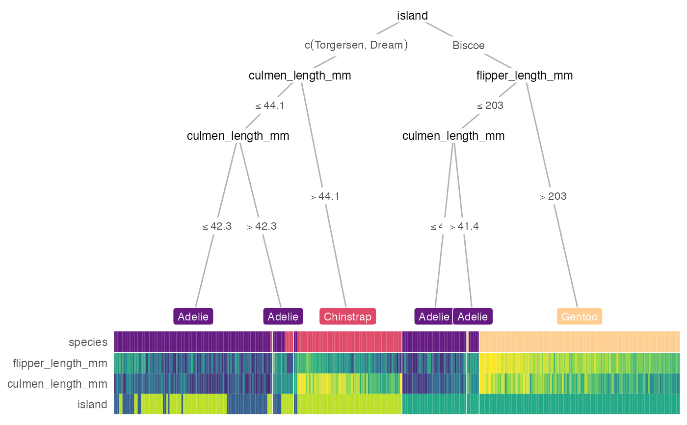

heat_tree() alias.
heat_tree( x, target_lab = NULL, data_test = NULL, task = c("classification", "regression"), feat_types = NULL, label_map = NULL, target_cols = NULL, target_legend = FALSE, clust_samps = TRUE, clust_target = TRUE, custom_layout = NULL, show = "heat-tree", heat_rel_height = 0.2, lev_fac = 1.3, panel_space = 0.001, print_eval = (!is.null(data_test)), ... ) treeheatr( x, target_lab = NULL, data_test = NULL, task = c("classification", "regression"), feat_types = NULL, label_map = NULL, target_cols = NULL, target_legend = FALSE, clust_samps = TRUE, clust_target = TRUE, custom_layout = NULL, show = "heat-tree", heat_rel_height = 0.2, lev_fac = 1.3, panel_space = 0.001, print_eval = (!is.null(data_test)), ... )
Arguments
| x | Dataframe or a `party` or `partynode` object representing a custom tree. If a dataframe is supplied, conditional inference tree is computed. If a custom tree is supplied, it must follow the partykit syntax: https://cran.r-project.org/web/packages/partykit/vignettes/partykit.pdf |
|---|---|
| target_lab | Name of the column in data that contains target/label information. |
| data_test | Tidy test dataset. Required if `x` is a `partynode` object. If NULL, heatmap displays (training) data `x`. |
| task | Character string indicating the type of problem, either 'classification' (categorical outcome) or 'regression' (continuous outcome). |
| feat_types | Named vector indicating the type of each features, e.g., c(sex = 'factor', age = 'numeric'). If feature types are not supplied, infer from column type. |
| label_map | Named vector of the meaning of the target values, e.g., c(`0` = 'Edible', `1` = 'Poisonous'). |
| target_cols | Character vectors representing the hex values of different level colors for targets, defaults to viridis option B. |
| target_legend | Logical. If TRUE, target legend is drawn. |
| clust_samps | Logical. If TRUE, hierarchical clustering would be performed among samples within each leaf node. |
| clust_target | Logical. If TRUE, target/label is included in hierarchical clustering of samples within each leaf node and might yield a more interpretable heatmap. |
| custom_layout | Dataframe with 3 columns: id, x and y for manually input custom layout. |
| show | Character string indicating which components of the decision tree-heatmap should be drawn. Can be 'heat-tree', 'heat-only' or 'tree-only'. |
| heat_rel_height | Relative height of heatmap compared to whole figure (with tree). |
| lev_fac | Relative weight of child node positions according to their levels, commonly ranges from 1 to 1.5. 1 for parent node perfectly in the middle of child nodes. |
| panel_space | Spacing between facets relative to viewport, recommended to range from 0.001 to 0.01. |
| print_eval | Logical. If TRUE, print evaluation of the tree performance. Defaults to TRUE when `data_test` is supplied. |
| ... | Further arguments passed to `draw_tree()` and/or `draw_heat()`. |
Value
A gtable/grob object of the decision tree (top) and heatmap (bottom).
Examples
heat_tree(penguins, target_lab = 'species')# \donttest{ heat_tree( x = galaxy[1:100, ], target_lab = 'target', task = 'regression', terminal_vars = NULL, tree_space_bottom = 0)#> Warning: binary variable(s) 4 treated as interval scaled# } treeheatr(penguins, target_lab = 'species')treeheatr( x = galaxy[1:100, ], target_lab = 'target', task = 'regression', terminal_vars = NULL, tree_space_bottom = 0)#> Warning: binary variable(s) 4 treated as interval scaled